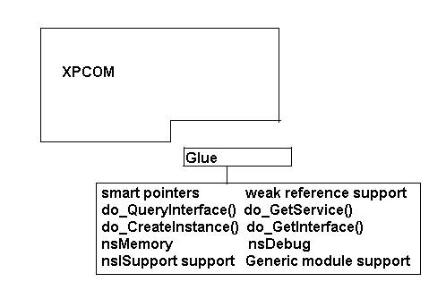
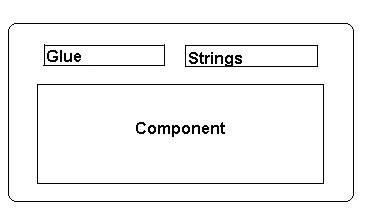

この文書は鋭意翻訳中です。
現在、草稿 を公開しています。
コメントは Mozilla Japan 翻訳部門 連絡用掲示板 の 該当スレッド にお願いします。
原文 "XPCOM Component Reuse" は mozilla.org をご覧ください。
XPCOM Component Reuse
By Doug Turner, and Ellen Evans
Overview
Historically if you were a developer who wanted to use some or all of the Mozilla codebase in your own application, you were required to download, build the entire Mozilla tree, and distribute your own copy of Mozilla. While this may have been tedious, it did guarentee that all the components that you acquired in this way were binarily and syntactically compatible.
Now, however, there are two projects underway at mozilla.org designed to streamline the process through which Mozilla code can be acquired, built, and distributed to end users. On the one hand, mechanisms are being put together to make it possible to download and build limited subsets of the codebase instead of the entire tree. For more information on this effort, see bootstrap.pl: Embed/REQUIRES-based build mechanism.
On the other hand, mechanisms are also being crafted to allow a single set of core components, the Gecko Runtime Environment (formally MRE), stored in a central place on an end-user's machine, to be used as the support for any number of Gecko-based applications, shrinking application file size and simplifying user installation.
As useful as these two projects undoubtedly will be, they do increase substantially the likelihood that components from different versions of Mozilla will at some point be required to interact with each other, raising significant issues of compatibility. The following notes are designed to help the developer who may be interested in taking advantage of this new, componetized Mozilla development environment to write code that is less likely to run into problems caused by version and/or compiler incompatibilties. If you are building an application that ships its own internal copy of all necessary Mozilla components, which have been built as a unit, these suggestions may be of less significance.
The first and most important step you can take is to use, whenever possible, XPCOM interfaces instead of their supporting implemented classes. Because the codebase is open, and because there are a large number of seemingly useful classes already written and easily available (all you need to instantiate an object at runtime is an ID), the temptation to utilize those classes is great. But no implemented class in Mozilla is guarenteed to stay the same from one version to the next. A number of interfaces, on the other hand, are guarenteed not to change in the future. These are interfaces which have been marked @status FROZEN. By designing your code to use by strong preference only those interfaces which have been marked frozen, you increase considerably the chances that a component that you write today will be able to interact seamlessly with a component written six months from now. The public interfaces that have been frozen are listed in the Gecko Embedding API Reference. So the best way to ensure continuing syntactic compatibility of components from one version to the next is to use only frozen interfaces. And because interfaces are, in essence, pure abstract classes, using them also promotes longterm binary compatibility.
But even if you commit to using by strong preference interfaces that have been frozen, it is simply a fact that in some cases, you will need to do something which is not supported by a frozen interface. The code underlying nsCOMPtr, for example, is not frozen, but using this "smart pointer" is highly recommended, as it automates some of the more burdensome and error-prone aspects of COM reference counting. There are a number of XPCOM utility classes, such as nsDebug, that are also not represented through a frozen interface, but which are, nonetheless, close to being essential in many aspects of developing with Mozilla. The string classes also belong to this set of extremely useful but not frozen components. And you may find other examples for your particular situation. In these cases you have basically three options: you can simply manually copy the code into your own application; you can try to convince the Mozilla module owner that the functionality is of such widespread use that it should be exposed through a frozen interface (be aware, though, the process for arriving at the frozen state is often long and complex); or, in the case of the XPCOM utilities and the string classes, you can use a workaround employing special libraries that now exist in the code.
The "Glue" Library
The XPCOM "glue" library (lxr) is built as a normal part of XPCOM. But by linking a standalone version of this into your application or component, you, in essence, get a snapshot copy of this code. While it is a bit expensive in terms of footprint, it does allow you to work in any Mozilla 1.0 environment with confidence. If footprint is of concern, you can trim out the pieces that you do not need. The string library can and should be used in the same manner with the same caveats. The current string code is built without any dependencies on XPCOM. This means that it can be directly included into your component or embedding application.

The glue library consists of commonly requested helper classes. Although this article isn't meant as a complete description of how to use the classes in the glue library, here is an overview:
- Smart pointers
- See nsCOMPtr User's Manual.
- Support in the glue library also includes:.
- do_QueryInterface
- do_CreateInstance
- do_GetService
- do_GetInterface
- Weak References
- See nsIWeakReference documentation.
- Support in the glue library also includes:.
- do_QueryReferent
- nsISupports Support
- Macros for various implementions of nsISupports.
- Macros for handling reference counting, and object instantation.
- nsMemory
- A static class wrapper around the global nsIMemory implemention.
- nsDebug
- A static class which provides basic assertion and pre/post condition checking.
- Generic Module Support
- See generic factories documentation.
Putting it all together
If you are building an XPCOM component or embedding Gecko, linking to the glue static library and string library will reduce the dependancies which you may have on XPCOM. In this case be aware you will also have to link to NSPR.
When building, make sure that the build define XPCOM_GLUE is defined. This will ensures that the proper calling convention is used on the functions in the glue library. If you forget this step, you may have troubles linking.

If you use this method, you should double-check all of the dll imports from your component or application. On Windows, for example, run: "dumpbin /imports
Below is a snapshot of the xpcom includes from an embedding example. Clearly, this embedding example must ship its own copy of XPCOM to maintain compatibility.
Microsoft (R) COFF Binary File Dumper Version 6.00.8447
Copyright (C) Microsoft Corp 1992-1998. All rights reserved.
Dump of file winEmbed.exe
File Type: EXECUTABLE IMAGE
Section contains the following imports:
xpcom.dll
411670 Import Address Table
4112F4 Import Name Table
0 time date stamp
0 Index of first forwarder reference
829 ?get@nsAFlatString@@UBEPBGXZ
25C ??BnsXPIDLString@@QBEPBGXZ
148 ??1nsDependentString@@UAE@XZ
7D ??0nsDependentString@@QAE@PBGI@Z
154 ??1nsGetServiceByContractID@@UAE@XZ
82E ?get@nsString@@UBEPBGXZ
888 NS_ShutdownXPCOM
86C NS_InitXPCOM2
385 ?AssignWithConversion@nsString@@QAEXPBD@Z
849 ?strcmp@nsCRT@@SAHPBD0@Z
360 ?Append@nsAString@@QAEXABV1@@Z
E ??0NS_ConvertUTF8toUCS2@@QAE@ABVnsACString@@@Z
127 ??1NS_ConvertUTF8toUCS2@@UAE@XZ
6 ??0NS_ConvertASCIItoUCS2@@QAE@ABVnsAFlatCString@@@Z
36F ?AppendInt@nsString@@QAEXHH@Z
178 ??1nsString@@UAE@XZ
865 NS_CheckThreadSafe
60 ??0nsCreateInstanceByContractID@@QAE@PBDPAVnsISupports@@PAI@Z
588 ?NS_GetWeakReference@@YAPAVnsIWeakReference@@PAVnsISupports@@PAI@Z
49 ??0nsCAutoString@@QAE@XZ
384 ?AssignWithConversion@nsCString@@QAEXPBGH@Z
13A ??1nsCAutoString@@UAE@XZ
41 ??0nsAutoString@@QAE@XZ
105 ??0nsString@@QAE@XZ
138 ??1nsAutoString@@UAE@XZ
A0 ??0nsGetInterface@@QAE@PAVnsISupports@@PAI@Z
152 ??1nsGetInterface@@UAE@XZ
5C9 ?PrepareForUseAsOutParam@nsXPIDLString@@IAEPAPAGXZ
124 ??0nsXPIDLString@@QAE@XZ
4E ??0nsCString@@QAE@XZ
382 ?AssignWithConversion@nsCString@@QAEXABVnsAString@@@Z
3C1 ?CompressWhitespace@nsCString@@QAEXHH@Z
6C1 ?StripChars@nsCString@@QAEXPBD@Z
628 ?ReplaceChar@nsCString@@QAEXDD@Z
82A ?get@nsCString@@UBEPBDXZ
6C ??0nsDependentCString@@QAE@PBD@Z
87B NS_NewNativeLocalFile
143 ??1nsDependentCString@@UAE@XZ
13C ??1nsCString@@UAE@XZ
185 ??1nsXPIDLString@@UAE@XZ
7 ??0NS_ConvertASCIItoUCS2@@QAE@PBD@Z
125 ??1NS_ConvertASCIItoUCS2@@UAE@XZ
DA ??0nsQueryInterface@@QAE@PAVnsISupports@@PAI@Z
7EF ?Warning@nsDebug@@SAXPBD0H@Z
17F ??1nsSupportsWeakReference@@UAE@XZ
118 ??0nsSupportsWeakReference@@QAE@XZ
866 NS_CurrentThread
4F0 ?GetWeakReference@nsSupportsWeakReference@@UAGIPAPAVnsIWeakReference@@@Z
377 ?Assertion@nsDebug@@SAXPBD00H@Z
56F ?LogRelease@nsTraceRefcnt@@SAXPAXKPBD@Z
5C7 ?PreCondition@nsDebug@@SAXPBD00H@Z
569 ?LogAddRef@nsTraceRefcnt@@SAXPAXKPBDI@Z
A4 ??0nsGetServiceByContractID@@QAE@PBDPAVnsISupports@@PAI@Z
However, linking in the standalone glue library and string library we get something much more reusable:
xpcom.dll
43C6F4 Import Address Table
43C3A0 Import Name Table
0 time date stamp
0 Index of first forwarder reference
888 NS_ShutdownXPCOM
86C NS_InitXPCOM2
87B NS_NewNativeLocalFile
86B NS_GetServiceManager
867 NS_GetComponentManager
All of these functions are frozen and extern "C". This means that they are unaffected by any changes to the XPCOM library. It is also possible to eliminate these symbols altogether by dynamic loading.
Dynamic Loading
The glue library (xpcomglue.lib) provides stubs to the public frozen functions that XPCOM provides. The library will dynamically load the public symbols from the XPCOM library, producing two important results. First, the component or application will not have to link with XPCOM for any symbol. In fact having to link to any Gecko library after this dynamic loading happens is an immediate indication that something is wrong. Second, if the glue code can load XPCOM, the same glue code can also unload XPCOM. So an embedding application will able to shut down Gecko when it is not needed and to restart it at will.
To use this library, you need to initalize the library with the path to the xpcom library proper. If you don't have this path, you can use the default location by passing nsnull:
extern "C" nsresult NS_COM XPCOMGlueStartup(const char* xpcomFile); extern "C" nsresult NS_COM XPCOMGlueShutdown();
The first function sets up these stub functions. If you do not call this function, any call to a public xpcom function will fail. If you do not want this functionaltiy, you can rebuild this library with the flag "XPCOM_GLUE_NO_DYNAMIC_LOADING".